소음진동기사(구) (2005-05-29 기출문제)
1과목: 소음진동개론
1. 지진의 명칭과 진동가속도레벨(dB), 그리고 그에 따른 물적 피해에 대한 설명이 옳은 것은?
- 경진 : 60±5 , 약간 느낌
- 약진 : 70±5 , 크게 느낌
- 중진 : 90±5 , 기물이 넘어지고 물이 넘침
- 강진 : 110±5 , 가옥 파괴 30%이상
(정답률: 알수없음)

2. 음압에 관한 다음 설명 중 옳지 않은 것은?
- 음압은 입자속도에 비례한다.
- 음압은 음향임피던스의 2승에 비례한다.
- 음압은 매질의 밀도에 비례한다.
- 음압은 음의 전파속도에 비례한다.
(정답률: 알수없음)
3. 소음이 신체에 미치는 영향으로 틀린 것은?
- 맥박수와 호흡수 증가
- 타액 분비량의 증가, 위액산도 저하
- 두통, 불면, 기억력 감퇴
- 혈당도, 백혈구 수 감소
(정답률: 알수없음)
4. L1=80[dB], L2=70[dB]인 음들의 합, 평균, 차는 다음 중 어느 것인가? (순서대로 합, 평균, 차)
- 80.4[dB], 77.4[dB], 79.5[dB]
- 80.7[dB], 77.6[dB], 78.5[dB]
- 80.4[dB], 77.6[dB], 78.5[dB]
- 80.7[dB], 77.4[dB], 79.5[dB]
(정답률: 알수없음)
5. 음원이 움직일 때 들리는 소리의 주파수가 음원의 주파수와 다르게 느껴지는 효과는?
- 마스킹(masking) 효과
- 도플러(Doppler) 효과
- 양이(兩耳) 효과
- 옴.헬모올쯔(Ohm. Helmholtz) 효과
(정답률: 알수없음)
6. 다음 중 물체의 체적변화에 의해 전달되는 소밀파에 해당되는 것은?
- 종파
- 횡파
- 표면파
- 고정파
(정답률: 알수없음)
7. 정현진동하는 경우 진동 속도의 진폭에 관한 설명으로 옳은 것은?
- 진동 속도의 진폭은 진동 주파수에 비례한다.
- 진동 속도의 진폭은 진동 주파수에 반비례한다.
- 진동 속도의 진폭은 진동 주파수의 제곱에 비례한다.
- 진동 속도의 진폭은 진동 주파수의 제곱에 반비례한다.
(정답률: 알수없음)
8. 봉의 종진동시 기본음(공명음)의 주파수 산출식으로 맞는 것은? (단, ℓ: 길이, E: 영률, ρ: 재료의 밀도 )
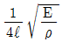
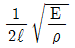
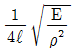
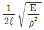
(정답률: 알수없음)
9. 초저주파음에 의한 영향이라 볼 수 없는 것은?
- 신경피로
- 구역질
- 공진현상
- 균형상실
(정답률: 알수없음)
10. 등방향성 점음원이 건물내부의 2면이 만나는 모서리에 있다. 이 음원으로부터 10m 거리에 있는 위치에서의 음압레벨은 얼마가 되겠는가? (단, 음원의 음향파워레벨은 1⑤dB이며, 구면파 전달로 가정한다.)
- 70dB
- 74dB
- 77dB
- 80dB
(정답률: 알수없음)
11. 50phon의 소리는 40phon의 소리에 비해 몇 배로 크게 들리는가?
- 1
- 2
- 3
- 5
(정답률: 알수없음)
12. 청력에 관한 내용 중 알맞지 않은 것은?
- 음의 대소는 음파의 진폭(음압)의 크기에 따른다.
- 음의 고저는 음파의 주파수에 따라 구분된다.
- 20,000Hz를 초과하는 것을 초음파라고 한다.
- 청력손실이란 청력이 정상인 사람의 최대 가청치와 피검자의 최대 가청치와의 비를 dB로 나타낸 것이다.
(정답률: 알수없음)
13. 바닥면적이 200m2이고, 천장높이가 5m인 교실이 있다. 교실 바닥 면적이 받는 공기압력의 크기는? (단, 공기밀도 1.25kg/m3)
- 31.25 Pa
- 41.25 Pa
- 51.25 Pa
- 61.25 Pa
(정답률: 알수없음)
14. 진동이 생체에 영향을 미치는 물리적 인자와 가장 거리가 먼 것은?
- 진동의 발생빈도
- 진동의 폭로시간
- 진동의 방향(수직, 수평, 회전 등)
- 진동의 파형(연속, 비연속)
(정답률: 알수없음)
15. Ldn이란 무엇을 의미하는가?
- 주야간 평균소음레벨이다.
- 병원에서의 평균소음레벨이다.
- 실내에서의 평균소음레벨이다.
- 공장에서의 평균소음레벨이다.
(정답률: 알수없음)
16. 소리의 세기가 10-12[W/m2]이고, 공기의 임피던스가 400rayls 일 때 음압(N/m2)은?
- 2 × 10-5
- 3 × 10-5
- 2 × 10-12
- 3 × 10-12
(정답률: 알수없음)
17. 다음 순음 중 우리 귀로 가장 크게 느낄 수 있는 것은?
- 500Hz 60dB 순음
- 1000Hz 60dB 순음
- 2000Hz 60dB 순음
- 4000Hz 60dB 순음
(정답률: 알수없음)
18. 다음 중 STC란 무엇을 의미하는가?
- 음향전달체계
- 2차음향전달
- 음향투과등급
- 저감목표소음
(정답률: 알수없음)
19. 사람의 외이도 길이가 3㎝이다. 18℃공기 중에서의 공명 주파수는?
- 29Hz
- 57Hz
- 2,852Hz
- 5,703Hz
(정답률: 알수없음)
20. 대기조건에 따른 공기흡음 감쇠효과에 관한 설명으로 옳은 것은?
- 습도가 낮을수록 감쇠치는 증가한다.
- 주파수가 낮을수록 감쇠치는 증가한다.
- 일반적으로 기온이 낮을수록 감쇠치는 작아진다.
- 공기의 흡음감쇠는 음원과 관측점의 거리에 거의 영향을 받지 않는다.
(정답률: 알수없음)
2과목: 소음방지기술
21. 실내에서 직접음과 잔향음의 크기가 같은 음원으로부터의 거리를 실반경(room radius, γ)이라 하는데, 그 식으로 맞는 것은? (단, Q는 음원의 지향계수, R은 실정수이다.)
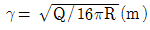
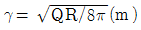
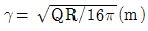
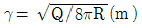
(정답률: 알수없음)
22. 총합투과손실이 32dB인 벽의 투과율은?
- 6.3 × 10-4
- 6.6 × 10-3
- 6.8 × 10-5
- 7.2 × 10-4
(정답률: 알수없음)
23. 흡음기구에 대한 다음 설명 중 옳지 않은 것은?
- 시공시 벽체에 공기층을 두고 다공질 재료를 부착할 경우, 저음역의 흡음율도 개선된다.
- 공명흡음역은 일반적으로 저음역이다.
- 판진동흡음기구인 경우 4000-8000Hz에서 최대 흡음율을 나타낸다.
- 다공질의 흡음재를 벽에 바로 부착시킬 때 흡음효과를 높이기 위해서는 그 두께가 최소한 입사음 파장의 1/10 이상이 되어야 한다.
(정답률: 알수없음)
24. 확산음장으로 볼 수 있는 공장의 부피가 3,500[m3], 내부 표면적이 2,100[m2]이고, 평균흡음율이 0.2일 때 다음 중 옳지 않은 것은?
- 실내에서 음선의 평균 자유전파 경로는 약 6.7m 이다.
- 실정수는 525m2 이다.
- Sabine 잔향시간은 약 1.8초 이다.
- 실내에 음향파워레벨이 90dB인 점음원을 설치할 때 실내의 평균음압레벨은 69dB 이다.
(정답률: 알수없음)
25. 방음벽에 관한 다음 설명 중 옳지 않은 것은?
- 점음원의 경우 방음벽의 길이가 높이의 5배 이상이면 길이의 영향은 고려하지 않아도 된다.
- 방음벽의 높이가 일정할 때 음원과 수음점의 중간 위치에 이를 세우는 경우가 가장 효과적이다.
- 방음벽의 안쪽은 될 수 있는 한 흡음성으로 해서 반사음을 방지하는 것이 좋다.
- 방음벽에 의한 현실적 최대 회절감쇠치는 점음원의 경우 24dB, 선음원의 경우 22dB 정도로 본다.
(정답률: 알수없음)
26. 원음장에 대한 설명 중 옳은 것은?
- 음원에서 거리가 2배될 때마다 음압레벨이 6dB씩 감소가 시작되는 위치부터 원음장이라 한다.
- 음원의 가장 가까운 면으로부터 음원의 가장 짧은 길이이내의 영역을 원음장이라 한다.
- 실내음향에서 실정수가 거리에 따라 일정한 값을 갖는 구간을 원음장이라 한다.
- 음원의 가장 가까운 면으로부터 관심주파수의 한파장이내를 원음장이라 한다.
(정답률: 알수없음)
27. 방음대책 방법중 전파경로 대책에 해당되지 않는 것은?
- 공장벽체의 차음성강화
- 거리감쇠
- 지향성 변환
- 소음기 설치
(정답률: 알수없음)
28. 소음제어를 위한 자재류의 기능 설명으로 틀린 것은?
- 흡음재는 음에너지를 열에너지로 변환시킨다.
- 차음재는 음에너지를 감쇠시킨다.
- 제진재는 진동에너지를 열에너지로 변환시킨다.
- 차진제는 기체정상흐름을 기계에너지로 전환시킨다.
(정답률: 알수없음)
29. 중공이중벽 설계시 틀린 것은?
- 중공이중벽은 공명주파수 부근에서 투과손실이 현저하게 저하된다.
- 공기층은 10cm 이상으로 하는 것이 바람직하다.
- 설계시에는 차음 목적 주파수가 공명주파수와 일치 주파수의 범위를 벋어나도록 하여야 한다.
- 중공이중벽은 일반적으로 동일 중량의 단일벽에 비해 5-10dB 정도 투과손실이 증가한다.
(정답률: 알수없음)
30. 음원기기를 실내면적 1[m2]인 실내에서 흡음율이 같은 실내면적 5[m2]인 실내로 옮겼을 때 음압레벨의 감쇠량은 몇 dB인가?
- 4 dB
- 5 dB
- 6 dB
- 7 dB
(정답률: 알수없음)
31. 항공기의 소음특성이 아닌 것은?
- 금속성의 높은 주파수 성분을 포함하고 있다.
- 간헐적이고 또한 충격적이다.
- 상공에서 발생하기 때문에 피해면적이 비교적 좁다.
- 국제 민간 항공기구에서 채택하고 있는 항공기 소음 평가량은 WECPNL을 이용한다.
(정답률: 알수없음)
32. 소음원의 대책중 직접적으로 소음을 차단하거나 흡수하지 않는 방법은 어느 것인가?
- 소음기
- 진동처리
- 흡음처리
- 차음처리
(정답률: 알수없음)
33. 방음벽 재료로는 음향특성 및 구조강도 이외에도 다음 사항을 고려하여야 한다. 해당하지 않는 것은?
- 방음벽에 사용되는 모든 재료는 인체에 유해한 물질을 함유하지 않아야 한다.
- 방음벽의 모든 도장은 주변 환경과 어울리도록 구분이 명확한 광택을 사용하는 것이 좋다.
- 방음판은 하단부에 배수공(Drain hole) 등을 설치하여 배수가 잘 되어야 한다.
- 방음벽은 20년이상 내구성이 보장되는 재료를 사용하여야 한다.
(정답률: 알수없음)
34. 실정수 200m2인 공장실내의 세면이 만나는 코너에 음향파워레벨 80dB의 소형기계가 설치되어 있다. 이 기계로부터 4m 떨어진 한 점의 음압도(dB)는? (단, 반확산음장 기준)
- 62
- 68
- 73
- 79
(정답률: 알수없음)
35. 투과손실은 중심주파수 대역에서는 질량법칙(Mass law)에 따라 변화한다. 음파가 단일벽면에 수직입사시 면밀도가 2배 증가하면 투과손실은 어떻게 변화하는가?
- 3 dB 증가
- 6 dB 증가
- 9 dB 증가
- 12 dB 증가
(정답률: 알수없음)
36. 단순팽창형 소음기에서 팽창부의 길이가 커지면 투과손실은 어떻게 되겠는가? (단, 단면팽창비는 일정하다.)
- 최대 투과손실은 변화가 없으나 통과대역의 수가 증가한다.
- 최대 투과손실 및 통과대역의 수가 감소한다.
- 통과대역의 수는 변화가 없으나 최대 투과손실이 증가한다.
- 최대 투과손실 및 통과대역의 수가 증가한다.
(정답률: 알수없음)
37. 차음재료에 대한 설명 중 옳지 않은 것은?
- 음의 전파경로 도중에 사용되는 벽체 재료로서 음을 감쇠시키기 위해 사용되는 재료이다.
- 차음재료를 선정할 때는 투과손실이 큰 것을 택할 필요가 있다.
- 차음성능이 큰 콘크리트, 벽돌, 유리섬유 등이 주로 차음재료로 사용되고 있다.
- 차음재료의 단위면적당 중량이 크고 주파수가 높을 수록 투과손실은 크게 된다.
(정답률: 알수없음)
38. 헬름홀쯔형 공명기(Helmholtz type resonator)는 어떤 원리를 이용하여 소음을 억제시키는가?
- 입사한 음을 공동체적에 가둔다.
- 입사한 음을 공동체적내에서 반사를 되풀이 하게 하므로서 음을 소멸시킨다.
- 공동의 공진주파수와 일치하는 음의 주파수를 목부에서 열에너지로 소산시킨다.
- 공동의 공진주파수와 일치하는 입사음의 주파수를 공동 내로 되반사시킨다.
(정답률: 알수없음)
39. 발전기실의 벽면에 발전기 발생음압이 입사하면 소밀파가 벽체에 발생한다. 입사파와 소밀파의 파장이 일치하면 일종의 공진상태가 되어 차음성능이 현저하게 저하되는데 이러한 현상을 무엇이라 하는가?
- 차음의 질량법칙
- 난입사 질량법칙
- 일치효과
- 음장입사효과
(정답률: 알수없음)
40. 10℃ 공기중의 음원 S에서 발생한 소리가 콘크리트벽 (ρ=2500 kg/m3, E = 2.8×1010N/m2)에 수직입사할 때 이 콘크리트벽의 반사율은?(단, 0℃에서 공기의 밀도는 1.293kg/m3이다.)
- 0.897
- 0.785
- 0.999
- 0.675
(정답률: 알수없음)
3과목: 소음진동 공정시험 기준
41. 다음 중 도로변 지역에 해당 되는 것은?
- 고속도로의 경우 도로단으로부터 150m 이내의 지역
- 2차선 일 경우 30m 이내의 지역
- 3차선 일 경우 50m 이내의 지역
- 4차선 일 경우 50m 이내의 지역
(정답률: 알수없음)
42. 다음 그림은 진동레벨계의 기본 구조를 나타낸 것이다. 그림 중 3에 해당하는 것은?
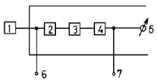
- 레벨렌지 변환기
- 증폭기
- 감각보정회로
- 교정장치
(정답률: 알수없음)
43. 배경소음 보정방법을 설명한 것 중 틀린 것은?
- 측정소음도가 배경소음보다 10dB(A)이상 크면 측정소음도를 대상소음도로 한다.
- 측정소음도가 배경소음보다 3∼9dB(A) 차이로 크면 정해진 보정표에 의한 보정치를 보정한 후 대상소음도를 구한다.
- 해당 배출시설에서 발생한 소음이 배경소음에 영향을 미친다고 판단될 경우에도 배경소음도는 측정해야 한다.
- 측정소음도가 배경소음보다 2dB(A)이하로 크면 재측정하여 대상소음도를 구한다.
(정답률: 알수없음)
44. 항공기 소음 측정시 사용 소음계의 청감보정회로 위치 및 동특성으로 옳은 것은?
- A특성 - 빠름
- C특성 - 빠름
- A특성 - 느림
- C특성 - 느림
(정답률: 알수없음)
45. 항공기소음을 측정하기 위한 측정지점의 원추형 상부공간이란?
- 측정위치를 지나는 지면 또는 바닥면의 법선에 반각 80°의 선분이 지나는 공간
- 측정위치를 지나는 지면 또는 바닥면의 법선에 반각 60°의 선분이 지나는 공간
- 측정위치를 지나는 지면 또는 바닥면의 법선에 반각 45°의 선분이 지나는 공간
- 측정위치를 지나는 지면 또는 바닥면의 법선에 반각 30°의 선분이 지나는 공간
(정답률: 알수없음)
46. 소음환경기준 측정시 디지털 소음자동분석계를 사용할 경우 샘플주기는 몇 초 이내에서 결정하고 몇 분 이상 측정하여야 하는가?
- 1초, 5분
- 5초, 5분
- 10초, 5분
- 5초, 10분
(정답률: 알수없음)
47. 철도소음의 측정시각 및 측정횟수로 알맞는 것은?
- 기상조건, 열차운행횟수 및 속도 등을 고려하여 당해 지역의 철도소음을 대표할 수 있는 낮시간대는 2시간 간격을 두고 30분씩 4회 측정하며, 밤시간대는 4시간 간격을 두고 30분씩 2회 측정하여 산술평균한다.
- 기상조건, 열차운행횟수 및 속도 등을 고려하여 당해 지역의 철도소음을 대표할 수 있는 낮시간대는 4시간 간격을 두고 30분씩 2회 측정하여 산술평균하며, 밤시간대는 1회 30분간 측정한다.
- 기상조건, 열차운행횟수 및 속도 등을 고려하여 당해 지역의 철도소음을 대표할 수 있는 낮시간대는 2시간 간격을 두고 1시간씩 4회 측정하며, 밤시간대는 4시간 간격을 두고 2회 1시간동안 측정하여 산술평균한다.
- 기상조건, 열차운행횟수 및 속도 등을 고려하여 당해 지역의 철도소음을 대표할 수 있는 낮시간대는 2시간 간격을 두고 1시간씩 2회 측정하여 산술평균하며, 밤시간대는 1회 1시간동안 측정한다.
(정답률: 알수없음)
48. 발파진동측정에 관한 사항으로 알맞지 않는 것은?
- 측정진동레벨은 발파진동이 지속되는 기간동안에, 배경 진동레벨은 대상진동(발파진동)이 없을 때 측정한다.
- 진동레벨계만으로 측정하는 경우에는 최고진동레벨이 고정(Hold)되지 않는 것으로 한다.
- 측정진동레벨 및 배경진동레벨은 소수점 첫째자리에서 반올림한다.
- 진동레벨계의 레벨렌지 변환기는 측정지점의 진동 레벨을 예비조사한 후 적절하게 고정시켜야 한다.
(정답률: 알수없음)
49. 어떤 단조공장의 부지경계선에서 단조기를 가동하기 전과 후의 진동레벨이 79dB(V)몇 82dB(V)였다. 단조기의 진동 레벨은 얼마인가?
- 82 dB(V)
- 81 dB(V)
- 80 dB(V)
- 79 dB(V)
(정답률: 알수없음)
50. 소음배출시설이 설치된 공장의 부지경계선에 2.5m 높이의 장애물이 있을 경우 측정위치로 가장 적절한 곳은?
- 장애물 상단에서 0.5m 높이
- 장애물 뒤쪽으로 5m 떨어진 곳
- 장애물에서 소음원 쪽으로 2m 떨어진 곳
- 장애물 뒤쪽의 암영대
(정답률: 알수없음)
51. 소음계의 출력을 레벨레코더에 접속시켜 단조작업시의 소음 레벨을 측정한 결과 다음 그림과 같은 양상을 보였다. 이때의 소음레벨은 얼마인가?
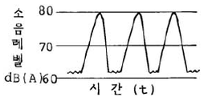
- 약 65[dB(A)]
- 약 70[dB(A)]
- 약 75[dB(A)]
- 약 80[dB(A)]
(정답률: 알수없음)
52. 다음 표와 같은 등가소음 기록지가 얻어졌다. 등가소음도는 얼마인가?
- 63 dB(A)
- 66 dB(A)
- 69 dB(A)
- 72 dB(A)
(정답률: 알수없음)
53. 진동레벨계의 성능에 대한 설명으로 틀린 것은?
- 지시계기의 눈금오차는 0.5dB이내이어야 한다.
- 측정가능 주파수 범위는 1-90Hz이상이어야 한다.
- 측정가능 진동레벨의 범위는 45-120dB이상이어야 한다.
- 진동픽업의 횡감도는 규정주파수에서 수감축 감도에 대한 차이가 없어야 한다.
(정답률: 알수없음)
54. 다음 중 항공기 소음의 평가단위인 WECPNL을 구하는 식으로 옳은 것은? (단,
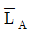
: 하루의 평균최고소음도, N: 1일간 항공기의 등가통과횟수) -10logN-27
-10logN-27 -10logN+27
-10logN+27 +10logN+27
+10logN+27 +10logN-27
+10logN-27
(정답률: 알수없음)
55. 소음계의 지시계기 중 지침형의 유효지시범위는 얼마 이상 이어야 하는가?
- 5 dB
- 10 dB
- 15 dB
- 20 dB
(정답률: 알수없음)
56. 1/3 Octave Band 분석기는 중심 주파수가 16, 20, 25, 31.5, 40, 50, 63, 80[Hz] 등의 순으로 되어있다. 이중 31.5[Hz] Band의 차단 주파수는 얼마인가?
- 25 ∼ 40[Hz]
- 27 ∼ 35[Hz]
- 28 ∼ 35.5[Hz]
- 27.5 ∼ 36.5[Hz]
(정답률: 알수없음)
57. 어떤 공장의 배기통에서 나오는 소음을 그림과 같은 위치에서 측정하였더니 71[dB(A)]이었다. 배기통 끝에서의 Power level은 얼마인가? (단, 이때의 배경소음은 67[dB(A)]이었고, 지면의 반사는 무시한다.)
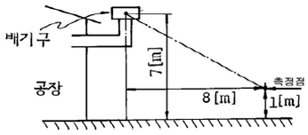
- 80[dB(A)]
- 90[dB(A)]
- 100[dB(A)]
- 110[dB(A)]
(정답률: 알수없음)
58. 철도진동 측정 및 분석에 대한 설명으로 옳지 않은 것은?
- 열차통과시마다 최고진동레벨이 배경진동레벨보다 최소 10dB이상 큰 것에 한하여 연속 10개 열차(상하행 포함)이상을 대상으로 최고진동레벨을 측정한다.
- 진동측정은 당해지역의 철도진동을 대표할 수 있는 시간대에 측정한다.
- 철도진동은 옥외측정을 원칙으로 하며, 그 지역의 철도 진동을 대표할 수 있는 지점을 측정점으로 한다.
- 열차의 운행횟수가 밤·낮 시간대별로 1일 10회 미만인 경우에는 측정열차수를 줄여 그중 중앙값 이상을 산술 평균한 값을 철도진동레벨로 할 수 있다.
(정답률: 알수없음)
59. 다음은 표준음 발생기에 대한 설명이다. 틀린 것은?
- 발생음의 음압도와 주파수가 표시되어야 한다.
- 100dB(A)이상이 되는 환경에서도 교정이 가능하여야 한다.
- 소음계의 측정감도를 교정하는 기기이다.
- 발생음의 오차는 ?1 dB 이내이어야 한다.
(정답률: 알수없음)
60. 진동배출허용기준의 측정방법 중 진동레벨계만으로 측정할 경우에 관한 설명으로 맞는 것은?
- 진동레벨계의 샘플주기를 1초이내에서 결정하고 5분이상 측정하여 기록한다.
- 진동레벨계의 샘플주기를 0.5초이내에서 결정하고 5분이상 측정하여 기록한다.
- 진동레벨계 지시치의 변화를 목측으로 30초 간격 10회 판독·기록한다.
- 진동레벨계 지시치의 변화를 목측으로 5초 간격 50회 판독·기록한다.
(정답률: 알수없음)
4과목: 진동방지기술
61. 진동차단의 방법중 전파경로상 대책에 해당하는 것은?
- 진동절연
- 방진시설
- 기초의 질량 및 강성증가
- 지중벽설치
(정답률: 알수없음)
62. 운동방정식이
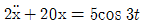
로 표시되는 진동계의 정상상태 진동의 진폭은 얼마인가?- 1.5
- 2
- 2.5
- 3
(정답률: 알수없음)
63. 특성 임피던스가 30×106kg/m2·sec인 금속관의 프렌지 접속부에 특성 임피던스 5×104kg/m2·sec의 고무를 넣어 진동 절연할 때 진동감쇠량(dB)은?
- 22
- 25
- 29
- 33
(정답률: 알수없음)
64. 정현진동일때 속도의 위상(位相)과 가속도의 위상은 어느 정도 벌어지는가?
- π/2
- π
- 2π
- π/4
(정답률: 알수없음)
65. 대수감쇠율(logarithmic decrement)이란?
- 비감쇠 강제진동 진폭에 대한 감쇠 강제진동 진폭의 비이다.
- 임계 감쇠계수에 대한 감쇠 계수의 비이다.
- 전체에너지에 대한 사이클당 흡수되는 에너지의 비이다.
- 자유진동의 진폭이 줄어드는 정도를 나타내는 것이다.
(정답률: 알수없음)
66. 진동의 공진현상이 일어나면 진동의 어느 성질이 증가 하는가?
- 주파수
- 위상
- 파장
- 진폭
(정답률: 알수없음)
67. 그림과 같은 보의 횡진동문제에서 좌단의 경계조건을 바르게 표시한 것은?
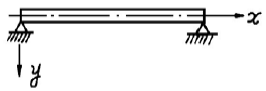
- y=0, dy/dx=0
- y=0, d2y/dx2=0
- y=0, d3y, dx3=0
- y=0, d4y, dx4=0
(정답률: 알수없음)
68. 그림과 같은 진동계의 고유진동수를 구하면?
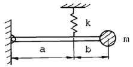
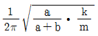
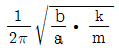
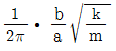
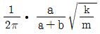
(정답률: 알수없음)
69. 임계감쇠계수 Cc 를 바르게 표시한 것은? (단, 감쇠비=1, 질량 m, 스프링 상수 k, 고유각진동수 ω)
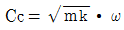
- Cc=2mkω
- Cc=2mω
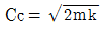
(정답률: 알수없음)
70. x1=cos6t 와 x2=2cos(6+0.1)t를 합성하면 맥놀이(beat)현상이 일어난다. 이 때 울림진동수와 최대진폭은?
- 0.01592[cps], 3
- 0.03183[cps], 3
- 3.1415[cps], 2
- 62.82[cps], 2
(정답률: 알수없음)
71. 진동의 물리적 영향에 대한 설명으로 틀린 것은?
- 인체에서의 진동 전달은 주파수에 따라 다르다.
- 사람이 서있을 때와 앉아있을 때의 진동 절연효과는 다르다.
- 공진효과는 서있을 때가 앉아있을 때 보다 현저하다.
- 발바닥이나 엉덩이에 가해진 진동이 머리에 전달될 때 주파수 20Hz까지는 5dB 정도 감쇠한다.
(정답률: 알수없음)
72. 변위(전진폭)를 D, 속도를 V라고 할 때 가속도 A를 구하는 식으로 알맞은 것은?
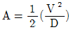
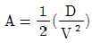
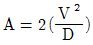
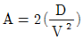
(정답률: 알수없음)
73. 어떤 진동이 큰 기계가 있고, 그 기계에서 20m 정도 떨어진 지점의 정밀기계에 미치는 진동방해를 10dB정도 낮추고 자 한다. 다음 방지대책 중 가장 효과가 기대되지 않는 것으로 판단되는 것은?
- 진동원의 기계를 진동이 작은 것으로 교환한다.
- 진동원의 기계를 방진지지한다.
- 정밀기계를 방진지지한다.
- 양쪽 기계의 중앙선상에 깊이 1m정도로 도랑을 만든다.
(정답률: 알수없음)
74. 탄성지지되어 있는 기계에 의한 가진주파수가 50Hz일 때 진동전달율을 0.1로 하기 위해서는 스프링의 정적변위(δ)는 얼마가 되어야 하는가? (단, 감쇠비는 무시한다.)
- 0.03cm
- 0.07cm
- 0.09cm
- 0.11cm
(정답률: 알수없음)
75. 금속스프링의 특징에 관한 설명 중 틀린 것은?
- 방진고무, 공기스프링에 비하여 내고온·내저온성 내유성, 내열화성이 좋다.
- 로킹(rocking)이 일어나지 않도록 주의해야 한다.
- 최대변위가 허용되며 저주파 차진에 좋다.
- 감쇠능력이 현저하여 공진시 전달율을 최소화 할 수 있다.
(정답률: 알수없음)
76. 정현진동에서 진동속도의 시간적 변화를 나타내는 진동가속도의 식으로 맞는 것은? (단, α는 진동가속도, Xo는 변위진폭이다.)
- α=-(2πf)2Xosin(2πft)
- α=-(2πf)2cos(2πft)
- α=-(2πf)2sin(2πft)
- α=2πf2Xosin(2πft)
(정답률: 알수없음)
77. 주파수 16[Hz], 진동속도 진폭의 최대치 0.0001[m/sec]인 정현진동에서 진동가속도의 기준치를 10-5[m/s2]으로 할 때 진동가속도레벨은?
- 9 [dB]
- 19 [dB]
- 28 [dB]
- 57 [dB]
(정답률: 알수없음)
78. 다음 중 무게가 대단히 큰 물체의 방진에 사용하여 공진 진동수를 가장 낮은 값으로 만들어 줄 수 있는 것은?
- 공기스프링
- 방진고무
- 펠트
- 콜크
(정답률: 알수없음)
79. 진동의 등감각곡선에 관한 내용 중 틀린 것은?
- 진동에 대한 인체 감각은 진동수에 따라 다르다.
- 수직진동은 4-8㎐ 범위에서 가장 민감하다.
- 수평진동은 10-20㎐ 범위에서 가장 민감하다.
- 일반적으로 수직보정된 레벨(수직진동레벨)을 많이 사용하며 dB(V)로 단위를 표시한다.
(정답률: 알수없음)
80. 진동흡수제 중 제진합금에 대한 설명으로 틀린 것은?
- 금속자체에 진동흡수력을 갖는 것을 말한다.
- 복합형 제진합금은 흑연주철, Al-Zn 합금이며, 40-78%의 Zn을 포함한다.
- 전위형 제진합금은 12%의 크롬과 철 합금을 말한다.
- 쌍전형 제진합금은 Mn-Cu계, Cu-Al-Ni계, Ti-Ni계 등을 말한다.
(정답률: 알수없음)
5과목: 소음진동 관계 법규
81. 소음·진동방지시설 중 소음방지시설이 아닌 것은?
- 소음기
- 방음터널시설
- 방음창 및 방음실시설
- 방진구 시설
(정답률: 알수없음)
82. 측정망 설치계획의 고시사항이 아닌 것은?
- 측정망의 설치시기
- 측정항목 및 기준
- 측정망의 배치도
- 측정소를 설치할 토지 또는 건축물의 위치 및 면적
(정답률: 알수없음)
83. 1998년에 제작된 승용자동차의 가속주행소음 기준은?
- 71dB(A)이하
- 73dB(A)이하
- 75dB(A)이하
- 77dB(A)이하
(정답률: 알수없음)
84. 배출시설 가동개시신고를 한 사업자는 가동개시일부터 몇 일 이내에 배출허용기준에 적합하도록 배출시설을 정상운영하여야 하는가?
- 15일
- 30일
- 45일
- 60일
(정답률: 알수없음)
85. 다음 중 이동소음원의 종류로 틀린 것은?
- 이동하며 영업을 하기 위하여 사용하는 확성기
- 행락객이 사용하는 음향기계 및 기구
- 소음방지장치가 비정상적인 사륜자동차
- 음향장치를 부착하여 운행하는 이륜자동차
(정답률: 알수없음)
86. 다음 중 환경관리인을 두어야 할 사업장 및 그 자격기준으로 적합하지 않는 것은?
- 총동력합계 5,000마력 이상인 사업장: 수질환경산업기사로 환경분야에서 2년이상 종사한 자
- 총동력합계 5,000마력 이상인 사업장: 전기분야산업기사로 환경분야에서 2년이상 종사한 자
- 총동력합계 5,000마력 미만인 사업장: 사업자가 당해 사업장의 배출시설 및 방지시설업무에 종사하는 피고용인 중에서 임명하는 자
- 총동력합계 5,000마력 미만인 사업장: 사업자가 당해 사업장의 관리책임자로 임명하는 자
(정답률: 알수없음)
87. 배출허용기준을 초과한 경우에 3차 행정처분기준으로 적절한 것은?
- 개선명령
- 조업정지
- 사용중지명령
- 폐쇄
(정답률: 알수없음)
88. 국가환경종합계획의 내용으로 타당하지 않은 것은?
- 인구·산업·경제·토지 및 해양의 이용 등 환경변화 여건에 관한 사항
- 환경오염도 및 오염물질 배출량의 예측과 환경오염 및 환경훼손으로 인한 환경질의 변화전망
- 환경오염피해 구제방법 강구
- 환경보전 목표의 설정과 이의 달성을 위한 단계별 대책 및 사업계획
(정답률: 알수없음)
89. 소음·진동의 측정대행업을 하고자 하는 자는 누구에게 등록하여야 하는가?
- 환경부장관
- 특별시장
- 군수
- 구청장
(정답률: 알수없음)
90. 생활소음 규제기준에 명시된 시간별 범위로 맞는 것은?
- 아침, 저녁: ⑤:00-09:00, 18:00-23:00
- 아침, 저녁: ⑤:00-08:00, 18:00-22:00
- 낮, 밤: 09:00-18:00, 22:00-⑤:00
- 낮, 밤: 08:00-18:00, 23:00-⑤:00
(정답률: 알수없음)
91. 다음 소음배출시설 중 마력기준시설 및 기계·기구에 포함 되지 않는 것은?
- 10마력 이상의 탈사기
- 30마력 이상의 유압식외의 프레스
- 50마력 이상의 압연기
- 30마력 이상의 제분기
(정답률: 알수없음)
92. 소음·진동규제법상 배출시설 설치허가를 받아야 하는 주체자로서 맞는 것은?
- 방지시설업자
- 측정대행업자
- 배출시설을 설치하고자 하는 자
- 기기검사 대행자
(정답률: 알수없음)
93. 다음은 방지시설의 권리·의무의 승계 및 설계·시공 등에 관한 사항이다. 맞는 것은?
- 사업자가 사망한 경우 그 상속인은 방지시설의 설치 허가를 다시 받아야 한다.
- 사업자가 배출시설을 양도한 경우 그 양수인은 사업자의 권리·의무를 승계한다.
- 배출시설을 임대차하는 경우 임차인은 배출허용기준의 준수의무를 지지 않는다.
- 방지시설의 설치는 사업자 스스로 하여서는 안되며 반드시 방지시설업자가 하도록 한다.
(정답률: 알수없음)
94. 제작중에 있는 자동차의 제작차소음허용기준 적합여부를 확인하기 위하여 자동차의 종류별로 제작대수를 참작하여 일정기간마다 실시하는 검사는?
- 수시검사
- 정기검사
- 재검사
- 전수검사
(정답률: 알수없음)
95. 대상소음도에서 시간별 보정치로 보정한 평가소음도는 50dB(A)이하여야 한다. 시간별 보정치로 맞지 않는 것은?
- 06:00 - 13:00의 보정치 -5
- 13:00 - 18:00의 보정치 0
- 18:00 - 24:00의 보정치 +5
- 24:00 - 익일 06:00의 보정치 +10
(정답률: 알수없음)
96. 운행차의 개선명령에 관한 설명으로 알맞지 않은 것은?
- 개선이 필요한 기간동안(15일 이내) 당해 자동차의 사용은 금지된다.
- 시장 등은 검사결과 운행자동차의 소음이 운행차 소음 허용기준을 초과한 경우, 자동차의 소유자에 대하여 개선을 명할 수 있다.
- 시장 등은 소음기나 소음덮개를 떼어 버린 경우 자동차의 소유자에 대하여 개선을 명할 수 있다.
- 시장 등은 경음기를 추가로 부착한 경우 자동차의 소유자에 대하여 개선을 명할 수 있다.
(정답률: 알수없음)
97. 인증을 '생략'할 수 있는 자동차에 해당되지 않는 것은?
- 항공기 지상조업용으로 반입하는 자동차
- 여행자 등이 다시 반출할 것을 조건으로 일시 반입하는 자동차
- 국제협약 등에 의하여 인증을 생략할 수 있는 자동차
- 외교관, 주한 외국군인 또는 그 가족이 사용하기 위하여 반입하는 자동차
(정답률: 알수없음)
98. 시·도지사가 매년 환경부장관에게 제출하는 주요 소음·진동관리시책의 추진상황에 관한 연차보고서에 포함될 내용으로 볼 수 없는 것은?
- 소음·진동발생원
- 소요재원의 확보계획
- 소음·진동 저감대책 추진실적
- 소음·진동 저감 결과보고서
(정답률: 알수없음)
99. 다음 중 공장진동 배출 허용 기준은?
- 평가진동레벨이 60dB(V) 이하
- 측정진동레벨이 60dB(V) 이하
- 대상진동레벨이 50dB(V) 이하
- 측정진동레벨이 50dB(V) 이하
(정답률: 알수없음)
100. 소음진동규제법상 용어의 정의로 알맞지 않는 것은?
- 소음: 기계·기구·시설 기타 물체의 사용으로 인하여 발생하는 강한 소리를 말한다.
- 진동: 기계·기구·시설 기타 물체의 사용으로 인하여 발생하는 강한 흔들림을 말한다.
- 방음시설: 소음진동배출시설으로부터 발생하는 소음을 제거하거나 감소시키는 시설을 말한다.
- 교통기관: 기차·자동차·전차·도로 및 철도 등을 말한다. 다만, 항공기 및 선박을 제외한다.
(정답률: 알수없음)
지진의 명칭은 진동가속도레벨(dB)에 따라 결정된다. 진동가속도레벨은 지진의 세기를 나타내는 지진계의 측정값으로, 숫자가 커질수록 지진의 세기가 강해진다.
경진은 약간 느껴지는 수준이며, 진동가속도레벨은 60±5이다. 약진은 크게 느껴지는 수준이며, 진동가속도레벨은 70±5이다. 중진은 기물이 넘어지고 물이 넘칠 정도로 강한 지진으로, 진동가속도레벨은 90±5이다. 강진은 가옥 파괴가 30% 이상 발생하는 매우 강한 지진으로, 진동가속도레벨은 110±5이다.